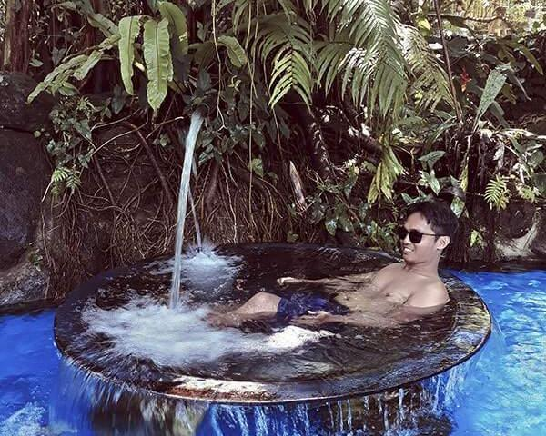

Valencia sits in the foothills of Mount Talinis, about 10 kilometres west of Dumaguete and noticeably higher. The jeepney ride up takes less than half an hour, yet the air turns cooler, the roads get greener, and the town has long been nicknamed the Little Baguio of Negros. It is where Dumaguete goes for waterfalls, warm springs and a break from the heat of the coast.
Within a short ride of the town plaza you will find Casaroro Falls at the bottom of a forested gorge, the red-stained rocks of Pulangbato Falls, a hot spring tinted by iron and sulfur, steaming vents in the hillside, cool mountain pools and a private war museum full of relics found on the slopes above town. Most of it can be covered in a single day, and none of it costs much.
This guide covers each stop with its current fee, how to get there and around, how to plan a half day or a full day, where to stay if you would rather sleep in the hills, and how to pair Valencia with nearby day trips. One thing to know first: the Mount Talinis trails on the Valencia side are closed.

Valencia at a glance
- Where: Valencia, Negros Oriental, about 10 km west of Dumaguete in the Talinis foothills
- Getting there: jeepney from the terminal south of Dumaguete's public market, 15 to 30 minutes
- Top sights: Casaroro Falls, Pulangbato Falls, Red Rock Hot Spring, the sulfur vents, Forest Camp
- Fees: mostly ₱20 to ₱180 per site, plus a guide at Casaroro
- Time needed: half a day for two or three stops, a full day for all of them
- Note: Mount Talinis trails in Valencia are closed from 1 November 2026
Getting to Valencia and Around Town
Jeepneys to Valencia leave from a terminal just south of the Dumaguete public market, roughly every 15 minutes through the day. The ride takes 15 to 30 minutes, and the fare is small. Fares were raised across the country in 2026, so check the posted fare inside. From the Valencia terminal, tricycles and habal-habal cover the last stretch to each sight.
The sights are spread across different barangays, and some sit up steep roads, so most visitors hire one driver for the day. A habal-habal for a full day of stops has cost around ₱1,000 in recent years, plus fuel. Agree on the route, the waiting time and the total before you set off. Groups can hire a car or van in Dumaguete instead, and many hostels and tour desks sell a Valencia day tour that bundles the main stops.
If you drive yourself, the roads to Casaroro and Pulangbato climb steeply and can be slippery after rain. A scooter handles them, but go slowly on the descents.
Things to Do in Valencia
Casaroro Falls
Casaroro is the waterfall most people picture when they think of Valencia: a single drop of about 30 metres into a cold, deep green pool, hidden in a gorge below the slopes of Talinis. It takes some effort. From the jump-off you go down about 335 steps into the ravine, then follow the river upstream over boulders and through a few shallow crossings. The walk is about 1.5 kilometres each way, and the climb back up the stairs is the hard part.
The entrance fee is collected at the top, usually ₱20 to ₱50. Recent visitors report that a guide is now required, at about ₱100 to ₱250 per group. Even if the trail looks obvious, the guide knows which rocks are safe when the river is high. There are no vendors at the falls, so bring water and snacks, and wear shoes with grip. Skip it after heavy rain, when the river rises fast and the rocks get slick.
Pulangbato Falls
Pulangbato means red rock, and the name is literal. In Barangay Malabo, water drops about nine metres over rock stained orange and rust by minerals into a green pool. The falls sit inside a resort, so there is no hike, just a short walk from the parking area. Entry has gone up to ₱100. Swimming is allowed, but don't dive, as there are sharp rocks under the surface. Cottages and tables can be rented for a picnic.
Red Rock Hot Spring
Just down the road from Pulangbato, Red Rock is a set of stone pools with warm water, around 37°C, tinted by the iron and sulfur in the ground. Entry is around ₱100. The cool mountain air makes it more pleasant than a hot spring on the coast, and late afternoon is the best time. A cold dip at Pulangbato followed by a warm soak here is the classic Valencia pairing. For other springs around the country, see our hot springs guide.
The sulfur vents
On the road near Pulangbato, the hillside steams and smells of sulfur. These vents sit on the edge of the Southern Negros geothermal field at Palinpinon, which also heats the springs nearby. A stop takes only a few minutes and is free, though donations are welcome. Don't step off the path, as the ground around the vents can be hot and unstable.
Forest Camp
About two kilometres from the town proper, Forest Camp is a mountain resort built around pools fed by cold water from the hills, shaded by tall trees. It is the easy, family-friendly stop in Valencia, with cottages and a camping area. Entry has been about ₱150 to ₱180. It gets busy with local families on weekends and school holidays, so go on a weekday if you want the pools quieter.
Cata-al World War II Museum
On the main road from Dumaguete, this private museum holds hundreds of items from the war: rifles, bombs, uniforms, medals, coins and everyday objects found on the slopes around Valencia. The collection was started by Porferio Cata-al, a guerrilla during the war, and continued by his son Felix, who often shows visitors around himself and tells the story behind each piece. Entry is free, with a donation box at the counter. It is a good first or last stop, since it sits on the way up.
Tierra Alta and the town
Tierra Alta, on the hills above the town, is a viewpoint with broad views over the lowlands, and many day tours stop here for photos. In the town proper, the plaza and the Pasalubong Center inside the Municipal Tourism Office sell local products from Valencia's farmers and makers, and Subida handcraft souvenirs are a common stop on tours. In May, the town celebrates its Chada Valencia festival, from the local word "patsada" for beautiful.
Mount Talinis: closed on the Valencia side
Valencia closed every trail to Mount Talinis within its borders from 1 November 2026, citing damage to the mountain's ecosystem, with no reopening date set. Do not try to enter through back routes. If climbing is part of your plan, read our Mount Talinis trails update for what the order covers and what to ask other towns.
What It Costs
A Half Day or a Full Day
- Half dayRed rocks and warm water
Leave Dumaguete after lunch. Stop at the Cata-al Museum on the way up, swim at Pulangbato Falls, look at the sulfur vents, then soak at Red Rock Hot Spring until late afternoon before heading back down for dinner.
- Full dayThe whole loop
Start early at Casaroro Falls, while you are fresh for the stairs and before the midday heat. Have lunch in town, then do Pulangbato Falls, the sulfur vents and Red Rock. Finish with a swim at Forest Camp or the view from Tierra Alta, and stop at the museum on the way back.
Where to Stay
Most visitors base themselves in Dumaguete, where the restaurants, nightlife and transport are, and come up for the day. Staying in Valencia itself suits travellers who want cool nights, quiet and an early start at Casaroro. The town has a handful of apartments, guesthouses and private houses for rent, plus camping at Forest Camp. Expect fewer places to eat at night than in the city, and check how you will get around before booking, since public transport thins out after dark.
Day Trips to Pair with Valencia
- Balinsasayao Twin LakesTwo crater lakes in the forest above Sibulan and San Jose, with kayaks and a viewpoint. It makes a good second hill day. See our Twin Lakes guide.
- Baslay Hot Spring, DauinA simple barangay-run hot spring high above Dauin, with strongly sulfuric water. Combine it with a dive or snorkel in Dauin for a different kind of hot spring day.
- Dumaguete itselfA half day in Valencia leaves the evening free for Rizal Boulevard and dinner in the city, which is the easiest plan of all.
Tips Before You Go
- Watch the weatherRain in the hills makes the Casaroro trail and river dangerous and can muddy Pulangbato. Ask your driver about conditions before you go.
- Pack for two temperaturesBring a swimsuit, a towel and a light jacket. The springs are warm, the falls are cold, and the evenings up here can be cool.
- Carry cashEntrance fees, guides and drivers are cash only, and small bills make life easier.
- Go early or on weekdaysWeekends bring local crowds to Forest Camp and Pulangbato. Early mornings are quieter and cooler for the Casaroro stairs.
Valencia rewards a slow day more than a rushed one. Pick two or three stops, give Casaroro the morning it needs, and leave enough time to sit in warm water while the clouds roll over Talinis. Then head back down to Dumaguete for dinner, a few degrees warmer and a lot more relaxed.

Comments
No comments yet. Been here recently? Share a tip or ask a question.
Leave a Reply